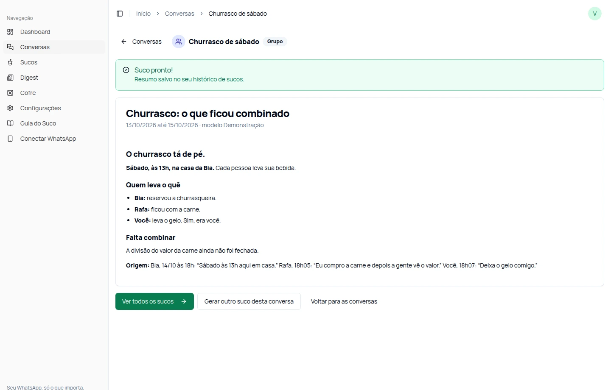

O Suco de Zap tira o que interessa das conversas: combinados, tarefas, prazos e aquele Pix que sumiu no papo.
Ver o produto por dentro Pra quem já mandou um “gente, o que eu perdi?”.
O Suco separa o que foi decidido, quem ficou de fazer e o que ainda está pendente. Você retoma o grupo sem reler a novela.
Interface real do produto. Dados e resultados fictícios para demonstração. Use as abas para ver Suco, Cofre e Digest.
Grupo da viagem, projeto empacado, orçamento do cliente. São 17 modelos pra organizar a conversa. E você também pode pedir do seu jeito.
Separe o que cada um ficou de levar no churrasco e o que ainda falta decidir.
Bia: “Sábado às 13h aqui em casa.” Rafa: “Eu compro a carne e depois a gente vê o valor.” Você: “Deixa o gelo comigo.”
Exemplos ilustrativos. O pedido orienta a IA; o resultado depende das mensagens disponíveis.
Você cuida do seu dia.
O contexto fica mais fácil de retomar.
Os primeiros 3 sucos são grátis. Seu cartão nem entra na conversa.
Em “Aparelhos conectados”, como você já conhece. O Suco é só leitura.
Selecione conversa, período e tipo de Suco. Ou escreva seu próprio pedido.
3 sucos grátis.
Sem cartão. Sem “esqueci de cancelar”.
3 resumos manuais concluídos por conta, uma única vez. Falhas não gastam a franquia. Seus resumos salvos continuam disponíveis.
R$ 97/mês
Sucos, Cofre, Digest e resumos automáticos de até 5 conversas.
Uma tarefa pode usar mais de uma chamada de IA. A busca local do Cofre não consome essa cota. Assinar é opcional; não há cobrança ao terminar os 3 sucos.
Não. O Suco é só leitura: não responde contatos, não faz disparos e não manda mensagem pra sua ex. Ele organiza o texto das conversas no app.
Ele busca nas mensagens que já foram sincronizadas. Escolha o tipo de dado, a conversa e o período; o texto é opcional quando você seleciona um tipo. Você vê o valor original e a mensagem de origem. O histórico pode ser incompleto: a busca não garante recuperar tudo que existe no celular.
Você define uma senha própria para abrir essa área. Ela fecha após 15 minutos e ao recarregar. Essa proteção não restringe a área Conversas nem acrescenta criptografia aos dados.
Esta versão trabalha com texto. Pode registrar nome ou legenda de arquivo, mas não baixa nem lê o conteúdo de PDFs, planilhas ou outros anexos. Também não transcreve áudios nem lê texto de imagens.
O painel avisa quando precisa reconectar; pode ser necessário ler outro QR. Novas mensagens não chegam enquanto estiver desconectado. A conexão via Baileys é não oficial e pode sofrer interrupções ou restrições. A IA também pode errar: confira números, datas e interpretações nas mensagens de origem.
Novas análises e sincronizações pausam. Os resumos salvos continuam disponíveis. Você escolhe se quer assinar por R$ 97/mês. Cofre, Digest e automações fazem parte do plano pago; a franquia gratuita não renova por mês.
O grupo fala. O Suco desenrola.
Ver o produto por dentroO Suco sincroniza e armazena textos e informações das conversas disponibilizadas pelo WhatsApp. Os recortes usados em resumos, Digest e extração de fatos são enviados à IA da Zhipu/BigModel. A busca local do Cofre não envia a consulta nem as fontes à IA. As credenciais de conexão do WhatsApp não fazem parte do envio para análise.
A sincronização não se limita às conversas escolhidas para resumir. Desconectar interrompe novas sincronizações, mas não exclui os dados já armazenados. Confira retenção, exclusão e contato do responsável nas informações apresentadas antes de conectar.
Conecte uma conta que você tenha autorização para usar e considere os direitos das pessoas nas conversas. O Suco é pessoal e somente leitura. Usa Baileys, uma conexão não oficial do WhatsApp, sujeita a interrupções e restrições. Não envia mensagens, não responde contatos e não faz disparos.
A franquia é de 3 resumos manuais concluídos por conta. O Suco pessoal custa R$ 97/mês, com até 300 processamentos mensais, 30 por dia e 5 conversas acompanhadas. A assinatura é opcional e exige sua confirmação. Ao cancelar a renovação, o acesso pago permanece até o fim do período já pago.